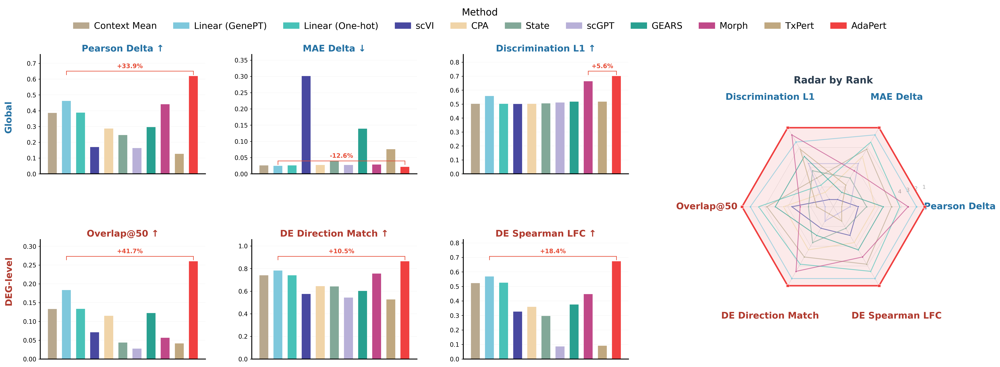
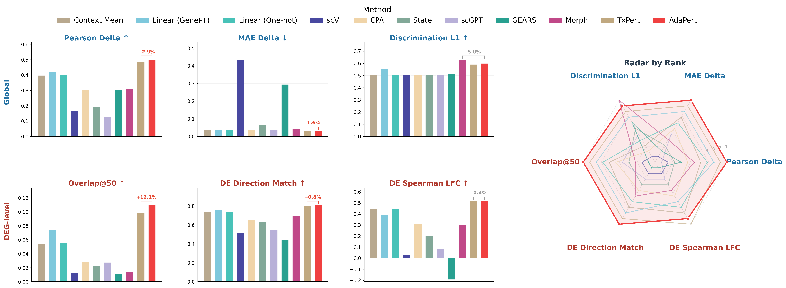
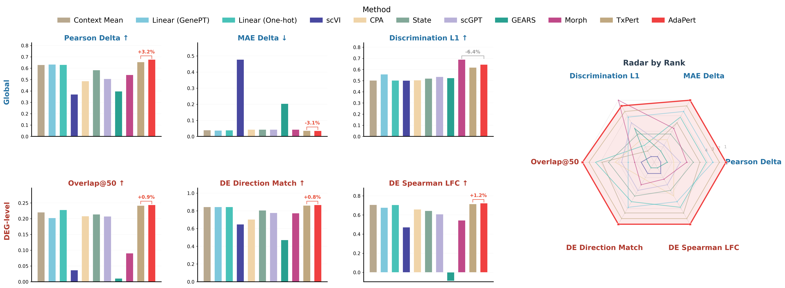
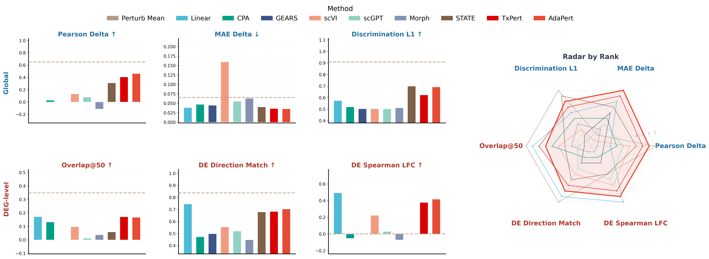
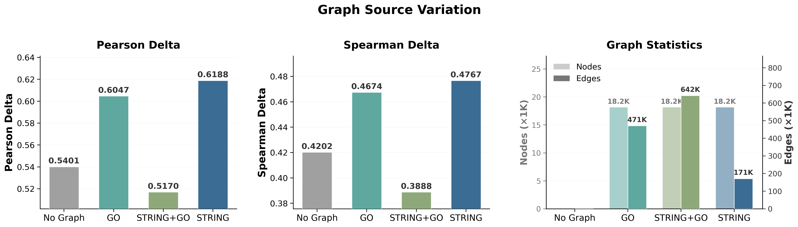
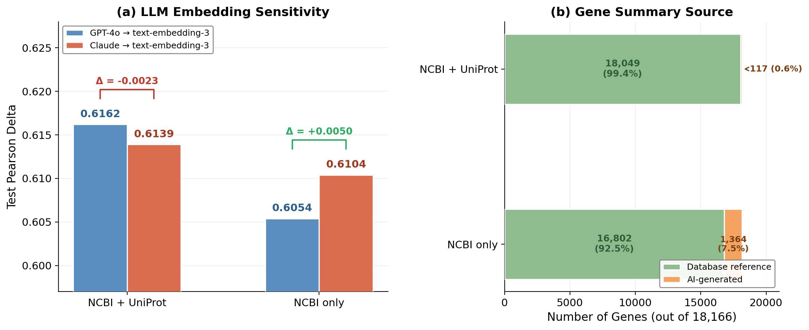

Figure 1: Comprehensive Comparison — K562

Figure 2: Comprehensive Comparison — JURKAT

Figure 3: Comprehensive Comparison — HEPG2

Figure 4: Comprehensive Comparison — RPE1

Figure 5: Method comparison on K562 unseen cell line setting (n=1,087 test perturbations). Models are trained on RPE1, HEPG2, and JURKAT cell lines, then evaluated on the held-out K562 line. 10 methods compared: Perturb Mean (dashed line, perturbation-aware training-set average), Linear (GenePT), CPA, GEARS, scVI, scGPT, Morph, STATE, TxPert, and AdaPert. Top row: global metrics (Pearson Delta, MAE Delta, Discrimination L1). Bottom row: DEG-level metrics (Overlap@50, DE Direction Match, DE Spearman LFC). Right: radar chart ranking all methods across 6 metrics. Perturb Mean is shown as a reference baseline (dashed line) since it directly copies training-set perturbation effects without generalization. Among learning-based methods, AdaPert achieves the highest Pearson Delta (0.460), lowest MAE Delta (0.035), and best DE-level metrics including DE Direction Match (0.703) and DE Spearman LFC (0.416). This cross-cell-line setting demonstrates AdaPert's ability to generalize perturbation predictions to an entirely unseen cellular context.
Table 1: All Metrics — K562
| Method | Pearson Δ | MAE Δ | Discrim. Score (L1) | Overlap@50 | DE Direction Match | DE Spearman LFC |
|---|---|---|---|---|---|---|
| Context Mean | 0.3867 | 0.0266 | 0.5030 | 0.1333 | 0.7419 | 0.5241 |
| Linear (GenePT) | 0.4629 | 0.0252 | 0.5584 | 0.1840 | 0.7836 | 0.5695 |
| Linear (One-hot) | 0.3886 | 0.0264 | 0.5028 | 0.1337 | 0.7421 | 0.5266 |
| scVI | 0.1711 | 0.3012 | 0.5020 | 0.0714 | 0.5769 | 0.3271 |
| CPA | 0.2877 | 0.0276 | 0.5028 | 0.1155 | 0.6454 | 0.3603 |
| scGPT | 0.0792 | 0.0567 | 0.5032 | 0.0154 | 0.5283 | 0.0657 |
| STATE | 0.2468 | 0.0412 | 0.5057 | 0.0442 | 0.6431 | 0.2977 |
| GEARS | 0.2975 | 0.1396 | 0.5182 | 0.1226 | 0.6034 | 0.3761 |
| MORPH | 0.4415 | 0.0292 | 0.6642 | 0.0569 | 0.7573 | 0.4479 |
| TxPert | 0.5879 | 0.0229 | 0.6971 | 0.2426 | 0.8502 | 0.6552 |
| AdaPert | 0.6200 | 0.0220 | 0.7014 | 0.2607 | 0.8663 | 0.6745 |
Table 2: All Metrics — JURKAT
| Method | Pearson Δ | MAE Δ | Discrim. Score (L1) | Overlap@50 | DE Direction Match | DE Spearman LFC |
|---|---|---|---|---|---|---|
| Context Mean | 0.3975 | 0.0348 | 0.5021 | 0.0547 | 0.7427 | 0.4409 |
| Linear (GenePT) | 0.4203 | 0.0343 | 0.5521 | 0.0735 | 0.7631 | 0.3924 |
| Linear (One-hot) | 0.3986 | 0.0349 | 0.5021 | 0.0552 | 0.7421 | 0.4405 |
| scVI | 0.1673 | 0.4351 | 0.5009 | 0.0124 | 0.5132 | 0.0284 |
| CPA | 0.3046 | 0.0362 | 0.5021 | 0.0285 | 0.6524 | 0.3057 |
| scGPT | 0.0797 | 0.0693 | 0.5031 | 0.0108 | 0.5322 | 0.0343 |
| STATE | 0.1755 | 0.0453 | 0.5147 | 0.0229 | 0.6069 | 0.1570 |
| GEARS | 0.3040 | 0.2948 | 0.5132 | 0.0107 | 0.4375 | -0.1935 |
| MORPH | 0.3091 | 0.0412 | 0.6303 | 0.0145 | 0.6975 | 0.2979 |
| TxPert | 0.4861 | 0.0332 | 0.5909 | 0.0981 | 0.8061 | 0.5198 |
| AdaPert | 0.5003 | 0.0327 | 0.5990 | 0.1099 | 0.8127 | 0.5175 |
Table 3: All Metrics — HEPG2
| Method | Pearson Δ | MAE Δ | Discrim. Score (L1) | Overlap@50 | DE Direction Match | DE Spearman LFC |
|---|---|---|---|---|---|---|
| Context Mean | 0.3850 | 0.0347 | 0.5021 | 0.1088 | 0.7382 | 0.5043 |
| Linear (GenePT) | 0.4004 | 0.0332 | 0.5713 | 0.1090 | 0.7467 | 0.4773 |
| Linear (One-hot) | 0.3854 | 0.0345 | 0.5021 | 0.1079 | 0.7391 | 0.5052 |
| scVI | 0.3397 | 0.0933 | 0.4994 | 0.1157 | 0.7033 | 0.4778 |
| CPA | 0.3621 | 0.0376 | 0.5069 | 0.1173 | 0.7252 | 0.4753 |
| scGPT | 0.0640 | 0.0713 | 0.5022 | 0.0189 | 0.5294 | 0.0897 |
| STATE | 0.2470 | 0.0439 | 0.5108 | 0.0296 | 0.6183 | 0.2258 |
| GEARS | 0.2579 | 0.2529 | 0.5096 | 0.0132 | 0.3234 | -0.1385 |
| MORPH | 0.3464 | 0.0387 | 0.6522 | 0.0452 | 0.6983 | 0.3534 |
| TxPert | 0.4502 | 0.0316 | 0.6016 | 0.1272 | 0.7902 | 0.5473 |
| AdaPert | 0.4694 | 0.0314 | 0.6158 | 0.1230 | 0.8022 | 0.5617 |
Table 4: All Metrics — RPE1
| Method | Pearson Δ | MAE Δ | Discrim. Score (L1) | Overlap@50 | DE Direction Match | DE Spearman LFC |
|---|---|---|---|---|---|---|
| Context Mean | 0.6288 | 0.0387 | 0.5019 | 0.2203 | 0.8434 | 0.7061 |
| Linear (GenePT) | 0.6334 | 0.0372 | 0.5564 | 0.2024 | 0.8433 | 0.6760 |
| Linear (One-hot) | 0.6302 | 0.0385 | 0.5021 | 0.2277 | 0.8431 | 0.7043 |
| scVI | 0.3693 | 0.4772 | 0.5010 | 0.0365 | 0.6472 | 0.4717 |
| CPA | 0.4861 | 0.0428 | 0.5034 | 0.2078 | 0.7029 | 0.6586 |
| scGPT | 0.0440 | 0.0841 | 0.5017 | 0.0070 | 0.5084 | 0.0315 |
| STATE | 0.5832 | 0.0427 | 0.5196 | 0.2139 | 0.8052 | 0.6431 |
| GEARS | 0.3963 | 0.2036 | 0.5235 | 0.0101 | 0.4715 | -0.0888 |
| MORPH | 0.5409 | 0.0424 | 0.6885 | 0.0901 | 0.7728 | 0.5437 |
| TxPert | 0.6545 | 0.0357 | 0.6177 | 0.2416 | 0.8602 | 0.7144 |
| AdaPert | 0.6756 | 0.0346 | 0.6446 | 0.2438 | 0.8674 | 0.7230 |
Table 5: All Metrics — K562 Cross Cell-Line (trained on RPE1/HEPG2/JURKAT, tested on K562)
| Method | n | Pearson Δ | MAE Δ | Discrim. L1 | Overlap@50 | DE Dir. Match | DE Spearman LFC |
|---|---|---|---|---|---|---|---|
| Perturb Mean | 1051 | 0.6501 | 0.0654 | 0.9086 | 0.3480 | 0.8372 | 0.8170 |
| Linear | 1133 | 0.4809 | 0.0382 | 0.5736 | 0.1712 | 0.7446 | 0.4914 |
| CPA | 1092 | 0.0265 | 0.0471 | 0.5191 | 0.1315 | 0.4709 | -0.0525 |
| GEARS | 1087 | -0.0021 | 0.0445 | 0.5024 | 0.0000 | 0.4972 | -0.0036 |
| scVI | 1092 | 0.1291 | 0.1593 | 0.5025 | 0.0958 | 0.5536 | 0.2214 |
| scGPT | 1087 | 0.0776 | 0.0550 | 0.5023 | 0.0117 | 0.5189 | 0.0279 |
| Morph | 1052 | -0.1126 | 0.0629 | 0.5106 | 0.0370 | 0.4468 | -0.0704 |
| STAMP | 1092 | 0.3088 | 0.0401 | 0.6984 | 0.0579 | 0.6776 | — |
| TxPert | 1087 | 0.4045 | 0.0358 | 0.6224 | 0.1702 | 0.6821 | 0.3763 |
| AdaPert | 1087 | 0.4601 | 0.0352 | 0.6916 | 0.1668 | 0.7027 | 0.4157 |

Figure 1: KG Variations — Graph Source Comparison

Figure 2: KG Variations — Edge Density Analysis

Figure 3: Context Aggregation Strategy Comparison
Table 1: Context Aggregation Strategy Comparison — K562
| Method | Pearson Δ | MAE Δ | Discrim. L1 | Discrim. L2 | Discrim. Cosine | Overlap@50 | DE Dir. Match | DE Spearman LFC |
|---|---|---|---|---|---|---|---|---|
| No Graph | 0.5473 | 0.0234 | 0.6653 | 0.6995 | 0.7483 | 0.2316 | 0.8327 | 0.6376 |
| Fixed 1-hop | 0.5932 | 0.0227 | 0.7051 | 0.7480 | 0.8071 | 0.2358 | 0.8519 | 0.6495 |
| Fixed 2-hop | 0.5749 | 0.0232 | 0.6820 | 0.7387 | 0.8004 | 0.2395 | 0.8437 | 0.6360 |
| AdaPert (Adaptive) | 0.6200 | 0.0220 | 0.7014 | 0.7557 | 0.8185 | 0.2607 | 0.8663 | 0.6745 |

Figure 1: Sensitivity of perturbation prediction to the choice of language model for gene summary generation. (a) Test Pearson delta comparison between GPT-4o and Claude (Haiku 4.5) for generating gene functional summaries, which are subsequently embedded using the same text-embedding-3-large model (3,072 dimensions). Two reference source conditions are tested: NCBI + UniProt (combining gene descriptions with protein functional summaries) and NCBI only (gene descriptions alone). Delta values indicate the performance difference (Claude − GPT). (b) Composition of gene summaries by source. When NCBI + UniProt references are available, 99.4% of the 18,166 genes in the STRING PPI network have existing database descriptions, leaving only 117 genes (0.6%) requiring AI generation. With NCBI descriptions alone, 1,364 genes (7.5%) lack substantive descriptions and require AI-generated summaries. The performance difference between LLMs scales with the proportion of AI-generated content: negligible when most summaries come from curated databases, but measurable (+0.0050 Pearson delta) when a larger fraction relies on AI generation.